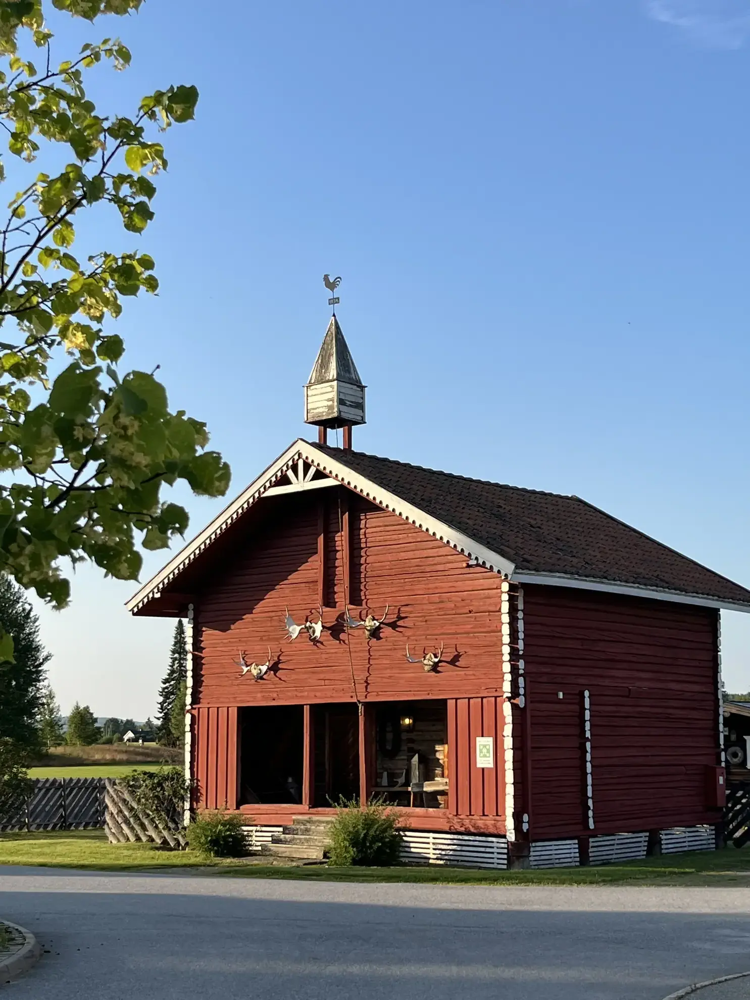
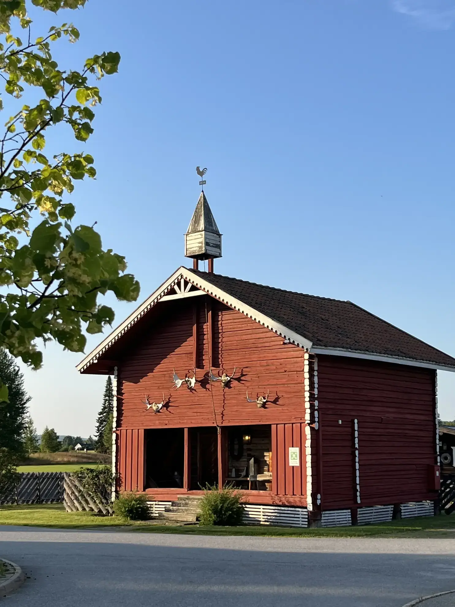

Nøkkelinformasjon
Eiendomsinformasjon
- Bygningsareal: 2 543 m² brutto / 2 287 m² bruksareal (BRA) (ca.)
- Totalt grunnareal: 23 090 m² (23 mål)
- Ubebygd areal: Ca. 10 000 m² utviklingstomt
- Eiendomsverdi: 25 millioner NOK (Merknad: Basert på takst fra 2023)
- Parkering: 50 plasser
- Byggehistorikk: Større oppussing og utvidelse 2008, kjøkken oppusset 2012, gjesteromfløy oppgradert 2013
Virksomhetsdrift
- Hotell: 40 gjesterom med 77 senger
- Restaurant: À la carte servering, 55 sitteplasser
- Storkjøkken: Moderne profesjonelt utstyr for store arrangementer og daglig à la carte drift
- Catering: Private funksjoner og arrangementer
- Konferansefasiliteter: 5 møterom, kapasitet opp til 200 personer
- Ansatte: 16 årsverk
- Utstyr: Moderne AV-utstyr, videokonferansesystem
Beliggenhet og renommé
- Porten til Finnskogen: Norges store skogregion med finsk kulturarv
- Strategisk beliggenhet: Mellom Elverum og Kongsvinger, 90 minutter til Oslo lufthavn
- Prisbelønt kjøkken: Flere kulinariske utmerkelser siden 2001
- Miljøsertifisering: Miljøfyrtårn-sertifisert
- Gjestevurderinger: 4,5/5 TripAdvisor, 8,7/10 Booking.com
- Arv: 73 år med familietradisjon og gjestfrihet
Finans og budsjett
Finansiell ytelse 2024
Skaslien AS (948753243)
- Omsetning: 2 666 639 NOK
- Nettoresultat: 427 699 NOK
- Vekst: 45,0% (2020-2024)
Skaslien Gjestgiveri AS (992496967)
- Omsetning: 16 611 210 NOK
- Nettoresultat: 555 898 NOK
- Vekst: 56,8% (2020-2024)
Budsjett og ytelse 2025
- Samlet omsetning: 19,5 millioner NOK (budsjett)
- Samlet nettoresultat: 1,7 millioner NOK (budsjett)
- Omsetningsvekst: Sterk oppgang med datterselskap som vokser 56,8% over 4 år
Eierstruktur
Skaslien AS
Morselskap – til salgs
- Eier all eiendom og fasiliteter
- Mottar leieinntekter fra datterselskap
Skaslien Gjestgiveri AS
Driftsselskap – inngår i salget
- Driver hotell, restaurant og all drift
- Ansetter alle medarbeidere
Utmerkelser og anerkjennelse
Kundeanmeldelser
Kulinarisk fortreffelighet
- "Best Dining Place Along the Road in Norway" (2001/2002)
- Regionvinner Ganefart (2008)
- Reiselivsprisen (2010)
- Finale Det Norske Måltid Stavanger (2013)
- 2nd place "Årets matglede bedrift" (2020)
Eiendom og fasiliteter
Overnatting
40 gjesterom med totalt 77 senger fordelt på to etasjer


Restaurant og kjøkken
Prisbelønt restaurant med fullt utstyrt storkjøkken


Konferanse og arrangementer
Kapasitet opp til 200 personer med moderne AV-utstyr


Eiendomsområde
23 090 m² totaleiendom med utvidelsesmuligheter på over 10 000 m² utviklingstomt
 



Investeringsmulighet
Nøkkelferdig drift
Skaslien Gjestgiveri tilbyr en sjelden mulighet til å overta en fullt operativ, prisbelønt reiselivsbedrift med 73 års dokumentert suksess. Salget inkluderer lager, alle ansatte, etablerte rutiner og driftssystemer. Eiendommen er klar for umiddelbar overtakelse med alt utstyr vedlikeholdt og service oppdatert.
Vekstpotensial
- Strategisk beliggenhet mellom Elverum og Kongsvinger
- Port til den voksende Finnskogen-turismeregionen
- Norsk Skogfinsk Museum åpner 2025 (30 km unna)
- Grue og Kirkenær er industrisenter for Solørregionen, med sterkt lokalt næringsliv og offentlig sektor som benytter gjestgiveriet året rundt
- Mål om å utvide kurs- og konferansevirksomheten - betydelig potensial for vekst i ledig kapasitet
- Omfattende fasiliteter klare for utvidelse
- Etablert renommé og lojal kundebase
Konkurransefortrinn
- Prisbelønt kjøkken som reisemål
- Diversifiserte inntektskilder (overnatting, restaurant, konferanser, catering)
- Solid helårsdrift, ikke avhengig av sesongturisme
- Miljøsertifisering (Miljøfyrtårn)
- Sterke lokale næringslivsforbindelser
- Har utdannet 47 lærlinger gjennom et veletablert kulinarisk program

Eierne Ottar & Elin vil være der og støtte i en overgangsperiode
Beliggenhet og regionale attraksjoner
Strategisk beliggenhet
Kirkenær, Grue kommune, Innlandet
- 90 minutter til Gardermoen lufthavn
- 70 minutter til Torsby lufthavn (Sverige)
- Mellom Elverum og Kongsvinger
- Port til Finnskogregionen
- Nær svenske grensen
Lokale attraksjoner
- Norsk Skogfinsk Museum - Ny bygning åpner 2025
- Finnskogleden - 240 km kulturhistorisk vandrerute
- Trysil Skisenter - Alpinbakker 1,5 time unna
- Kongsvinger Festning - Historisk stjerneformet festning
- Klart Glass - Verdensklasse glassblåsing (5 km)


Kontaktinformasjon
Klar for dine spørsmål
Skaslien Gjestgiveri representerer en unik mulighet til å erverve en nøkkelferdig reiselivsbedrift med 73 års historie. Kontakt oss for å diskutere denne investeringsmuligheten.
Visning: Etter avtale
Dokumentasjon: Komplett prospekt tilgjengelig for seriøse henvendelser